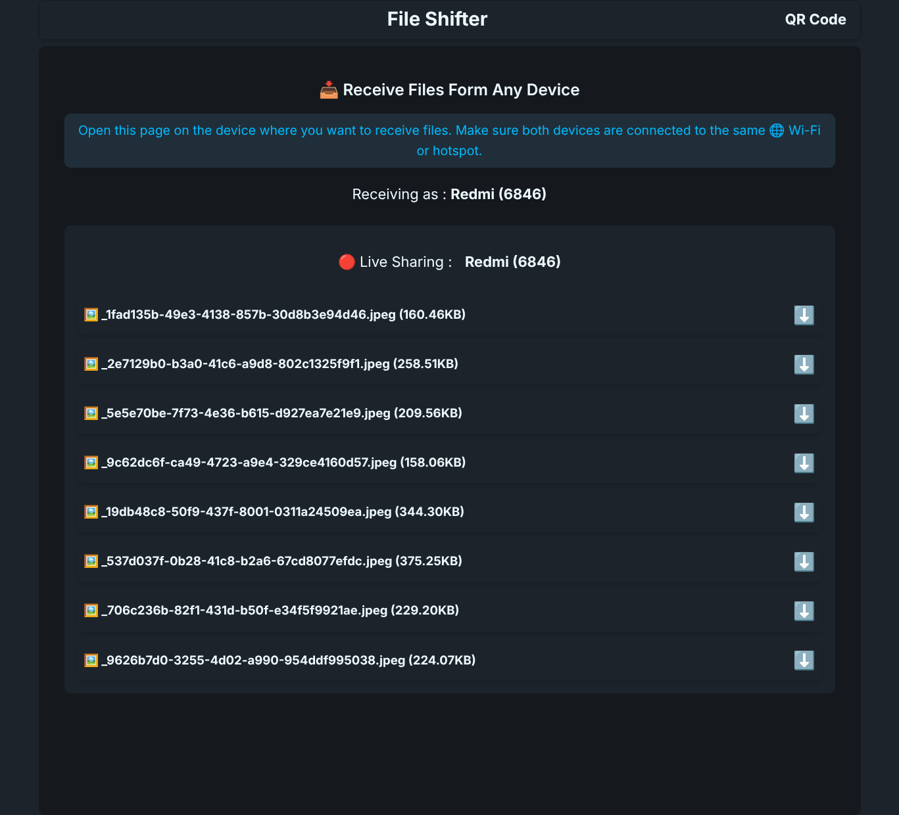

File Shifter
A high-performance LAN relay server built to master the Node.js Event Loop, Writable/Readable Streams, and low-level HTTP parsing.

Project Intent
File Shifter was built as an educational deep-dive into Node.js internals. By stripping away frameworks like Express, I manually implemented request/body parsing, cookie handling, and routing. The goal was to understand exactly how the server handles backpressure and binary data at the system level.
Technical Breakthroughs
Recipients can start downloading/streaming a file while it's still being uploaded by the sender, acting as a pass-through pipe.
Manual cookie parsing and device verification logic implemented without third-party middleware.
Dynamic QR code generation and IP tracking to ensure the server link remains valid across LAN changes.
Utilizing PassThrough streams to ensure minimal RAM usage even when transferring multi-gigabyte files.
Deployment & Setup
Windows (Automated)
Uses a custom PowerShell installer to prepare the Node.js environment.
Download from here File-Shifter
Run install.cmd (Extract first)Execute App.batLinux (Manual)
sudo apt install nodejsnpm install && npm start